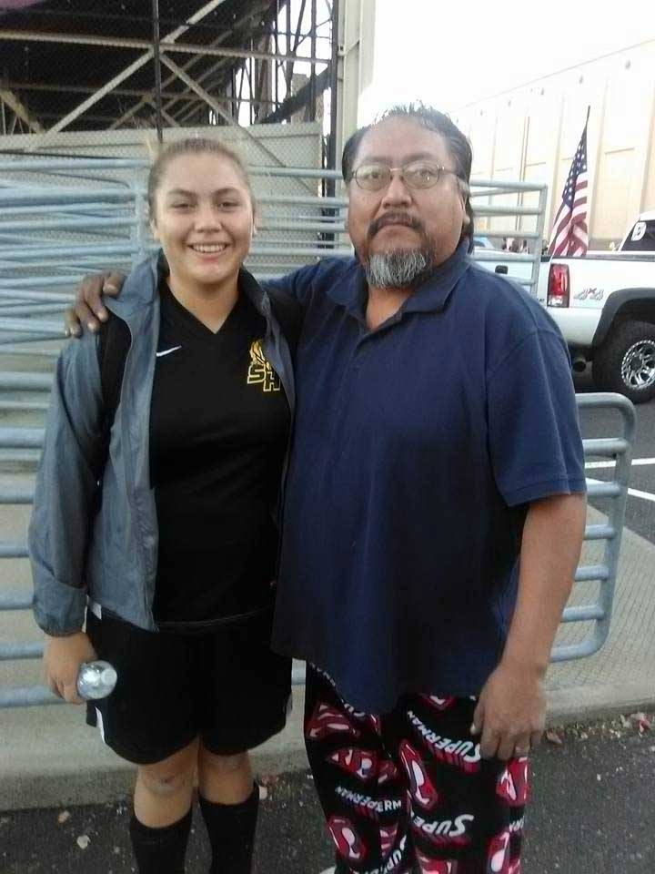

Target Audience
We want this site to be very user friendly and very easy to navigate around. We are looking for people that want to be connected to their community more and know more about events are happening. Most people who like to go on adventures and be in the outdoors will really benefit from our website. We want to provide all the information about the weather. Make sure everyone is connected and can be reached in case of an emergency. This app will also be viewable across all devices.
Sydney Allen
Job: College Student
Age:21
Ethnicity: White
Family Status:Living at home
Description
Sydney is a college student and commute to school by bus or car. She is very into the outdoors and often takes her dog on a walk daily. At night she runs 2 miles for exercise. She is always trying to plan her day a head so she often checks the weather daily to plan her outfits and personal needs a day in advance. Her method for viewing the weather is off of her phone.
Scott David
Job: Machinist
Age:25
Ethnicity: Native American
Family Status:Father to family of 6
Description
Scott is a busy guy and is also an outdoor fanatic. He tries to find an excuse to go camping year round. He also has kids who particapaite in sports yearly. He always checks the weather before his camping trips, so he knows what type of equiptment he will need. He also likes to get updates on the weather on the weekends so he can also bring the supplies he needs for all his kids soccer games. He relys only on is phone when he looks up this information.
Senarios
Senario 1: "I wonder if it is going to be sunny tomorrow or not?"
The User opens the website on his phone and checks the weather for tomorrow. Packs his with a rain jacket for his camping trip. There will be links and element on the page to make it easy for the user to find their information.
Senario 2: "What are the roads like?"
Before heading from work, the visitor opens his weather app and looks at road conditions before he goes home from work. There will be live upadates that will let people know more about road conditions or any slow downs they should be aware of.
Senario 3: "Where is the flooding happening?"
User goes to website and click the storm center tab, in the header, and be able to see updates about flooding around their area. They will be able to see community members update and post about the flooding close to their houses.
Sernario 4:"What is the weather at different locations?"
User can open the website from their phone and can navigate to the homepage. There they will be able to type in the zip-code they want to search up and then the website will take them to another website where they can view the weather conditions in that area.
Senario 5:"What events are happening in my area? "
Visitor can visit website and navigate to the storm center tab and scroll to the buttom wher they can view community post. They can view all the dates and information about events that happen around their area or post a new event of their own. We will still have full control over the post, so if there is any inappropriate content have the ability to delete posts.